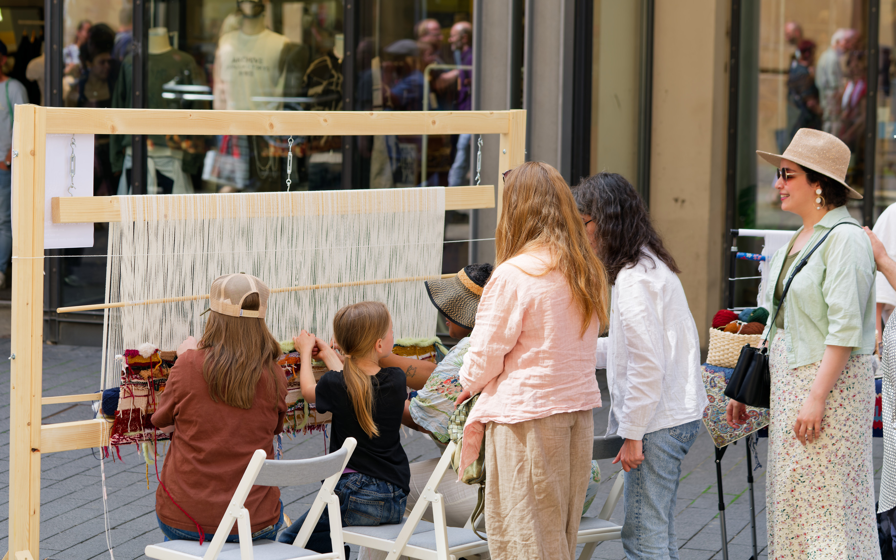
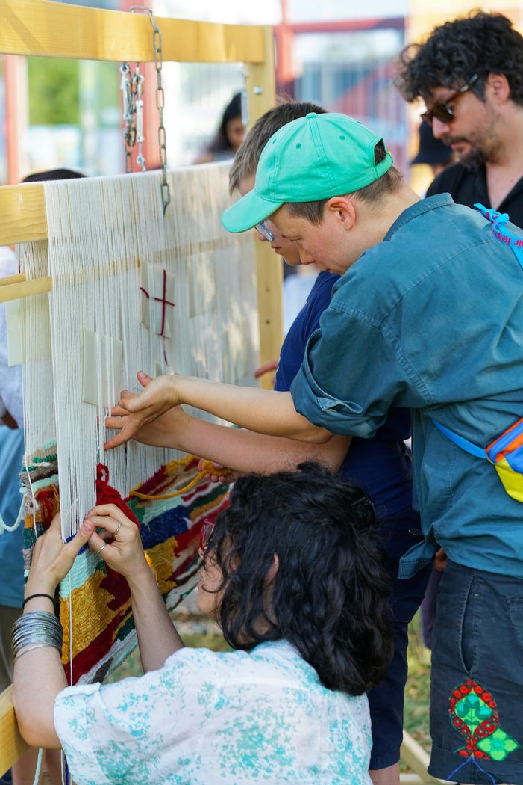
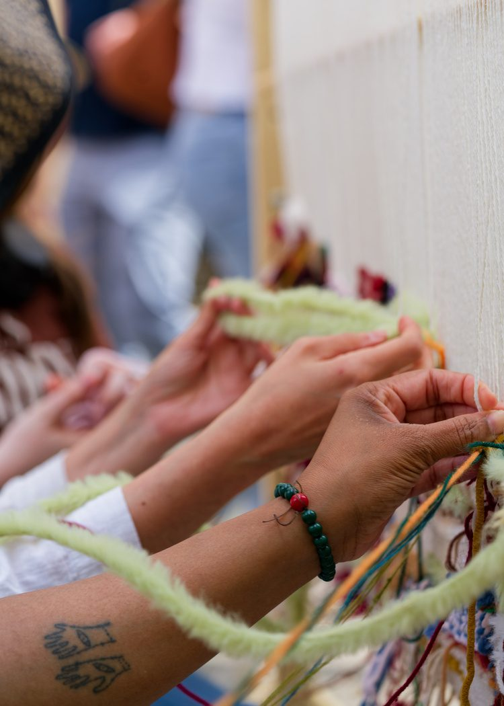
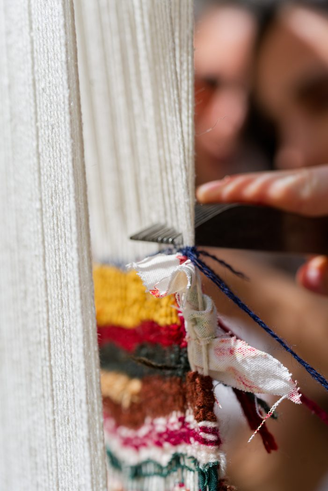

Workshop
Memory, Left Open

Memory, Left Open explores mourning, absence, and collective memory through the language of carpet weaving. When bodies are denied burial and grief is denied its rituals, the carpet becomes a space where the missing can still be named and remembered.
Each knot becomes an act of testimony, a gesture through which what cannot be spoken can be held by the hands. The work remains deliberately unfinished, allowing memory and mourning to stay open rather than resolved.


